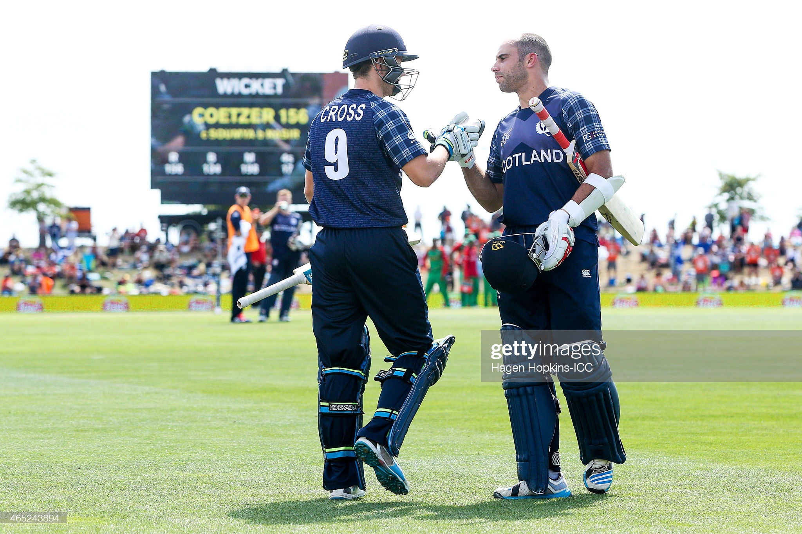
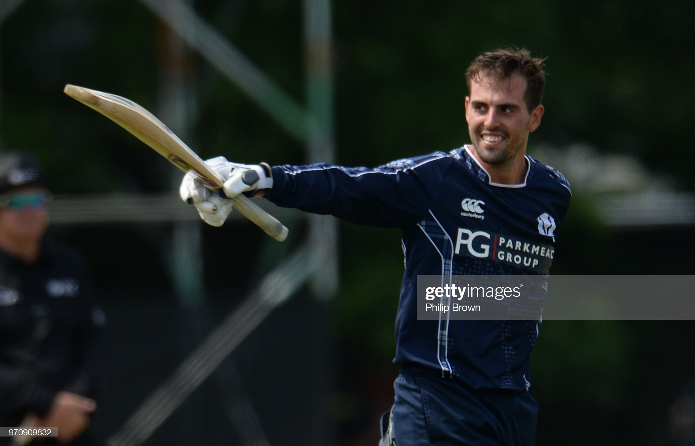
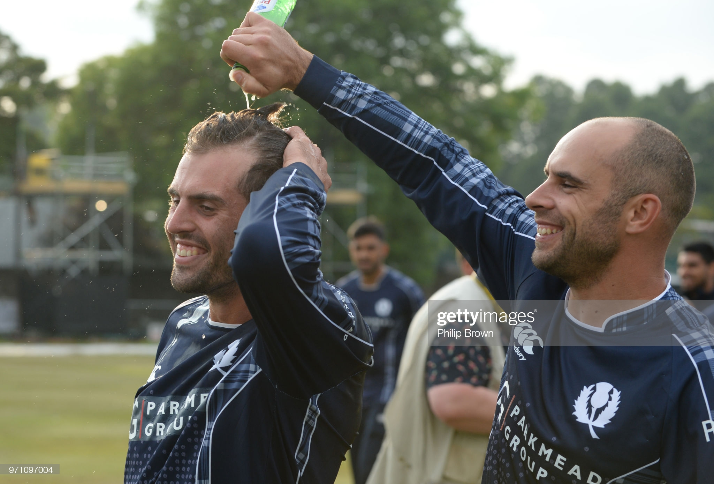

Calum MacLeod is one of Scotland’s most prominent cricketers. Nominated in 2020 for the Associate Men’s Cricketer of the Decade Award, MacLeod averages 36.48 with the bat in 68 ODI’s and has made 8 hundreds. I spoke to him about what the sport means to him, Scotland’s win over England in 2018 when he scored 140 not out, and his thoughts ahead of this year’s T20 World Cup.
How did you get into cricket Calum? What are your memories of playing growing up?
I grew up at Drumpellier cricket club just outside of Glasgow. My dad was a social member there, and me and my two brothers just used to go along. Mum and Dad would go down and socialise; we’d go down into the nets or onto the grass, just make games up and play cricket all summer. The first game of cricket I ever played was for my brother's team. They were a player short and I got dragged along – I just fielded and ever since then I just wanted to play. I was hooked by it from the very first time – I didn't bat, I didn't bowl, but just enjoyed it and wanted to play every opportunity. There’s just something about the game. You seem to fail more than you do well, no matter what level you’re at, but when you’re in that moment of doing well, whether it’s an U11 game or playing for Scotland, the emotions are almost the same.

"The clubs I’ve enjoyed the most have been real “club clubs” if that makes sense – it’s coming back and finding out how the 2nds or the 3rds have got on; it’s winning on a Saturday and enjoying a beer in the clubhouse."
With the past 18 months or so, has your relationship with cricket changed given the circumstances?
As a national team, it’s been really challenging – we’ve played two games of cricket in 18 months, which just isn’t enough. The associate game has issues to get cricket on at the best of times with the finances involved, before you add in a pandemic. The love of the game is still there, you’re just waiting. Any opportunity throughout the lockdown to watch any of the cricket that was on, I did and just wished it was us. Even watching and learning – watching Joe Root play in the subcontinent, the way he was going about his innings, some of the things that worked for him and didn't for others. I think that probably kept me going actually, the cricket and live sport. The teams that were able to get it on were not only lucky to be playing, it was lucky for all of us the rest of us that we were able to watch the game that we all enjoy.
It was certainly an escape for me. You’ve gone back to cricket obviously this summer in Kent, for the county side and your club team Lordswood. Do you notice differences between club cricket north and south of the border?
I don’t think between the top sides. The top sides in Scotland would be a top side anywhere – if you took the current Heriots side or the Grange side of the past few years, they’re made up of quite a lot of international cricketers, recently retired internationals or aspiring international players who are in the age group systems. Where I see the biggest difference is the depth, just because more people play cricket down here, so as you go down the leagues the standard tends to be higher. Whenever I’ve gone back and played in Scotland I’ve always thoroughly enjoyed it – it’s always played at quite a good tempo, quite a good competitiveness. The clubs I’ve enjoyed the most have been real “club clubs” if that makes sense – it’s coming back and finding out how the 2nds or the 3rds have got on; it’s winning on a Saturday and enjoying a beer in the clubhouse with some of the members who have come down to watch. That sense of community, especially with some of the cricket that we’re lucky enough to play as internationals, where it’s really high pressure. In some associate tournaments, you know if you don’t qualify your chance to play in a World Cup aren't there, or if you do really badly you might be losing your contract. So to go back to club cricket on a Saturday where there’s eleven guys who are there because they want to enjoy something, it’s refreshing to take a bit of the competitive pressure off, even though you still want to play well.
[That picture] over your right shoulder, nicely positioned on the wall, is what I want to talk about next - that game against England in 2018.
I’d like to say that was intentional, but my seven-month old son was having a moment where I usually do the calls, so I’ve been relegated to the garage! That was a birthday gift from my brothers, they got it framed up for me – it’s the only cricket thing I’ve got up in the house.
It’s not a bad one to have I guess?
No, it does make me smile every time I see it.
"I can't remember seeing many pitch invasions in Scottish sport let alone in Scottish cricket. The noise, the emotion, the sound of the game and the winning moment – I can still hear it now."
Going into that game, you’ve spoken about pressurised settings, playing at The Grange, a familiar setting – was there pressure on you at all?
It’s not often we get, not a free game, but just a game where playing with as much freedom as you can isn’t going to have a consequence. If I equate it to some of the top teams, England, India and Australia were regularly scoring 350 in the games leading into the World Cup, but in the tournament itself the scores were much lower. I think that’s because of the amount of cricket that they play where they can just play carefree cricket, because there’s no end consequence. That was something we took into playing England – we’d spoken about being this fearless team, who really put pressure back onto bowlers, and we’d spoken about beating teams when they were at their best. You didn't want them to turn up and play badly. A lot of what we did was to be aggressive, be dynamic, target powerplays, go after bowlers and not let teams settle. Getting that opportunity to play a team like England, who were number 1 at the time, I always felt they’re one of the teams that don’t want to expand cricket when they have the opportunity to bring more associates into World Cups – I think it was just at the right time we played them.
Obviously, it’s all well and good having that mindset, but you need to go and execute it. You walking out to bat with the base that Kyle [Coetzer] and Matthew [Cross] provided, must have given you the license to go and play the innings that you did?
One of the things that Scottish cricket will always be indebted to Kyle for is that it’s one thing as a captain to say “go and play like that”, but for him to lead from the front, be our most experienced batter, makes it easier for the rest of us to follow. If you’re batting at 3, walking out at 100-1 off ten or eleven overs, it’s a nice platform. It gives you a chance to get in a little bit before you realise how good the wicket is and that 350 is going to be a par score. I don't think you’d find many batters not happy to walk out at 100-1.
Did you have game plans for specific bowlers? Sweeping the spinners Ali and Rashid was a big feature of your innings.
We’re quite individual in terms of game plans. I’m not going to try to bat like Crossy or George Munsey. We get sent all the footage of the bowlers and then it’s up to you to think how you’re going to play against them. Sweeping at The Grange, with the nature of the pitch and with the stands in, it can be quite short square and a good area to target. That was a definite focus for me leading into the game, but against the seamers it didn’t vary much from what I’d normally do.
What are your memories of reaching three figures, and then walking off the Grange unbeaten at the end?
I remember feeling happy, and a wave of excitement getting 3 figures. I don't know whether it was because I was in the mythical “zone”, but when I think about that day, it's not the biggest wave of emotion that I get or the memory that gives me the most goosebumps. They’re much later on in the day, even after the game – things that I remember after the game or the winning moment. I think that's more where the emotion takes over, because you're not in control of it. You are in control of your batting, so yes you're delighted, yes you're happy, you can take your helmet off and celebrate it and it is a wonderful moment, but it's not where the emotions take over that you can't control.
When Safyaan [Sharif] took that wicket though, you watch the footage, and there was a real release - what was the aftermath like?
That's the moment that I think cricket in Scotland can capture. I think it's a sleeping giant of a sport in the country. The amount of cricket and the amount of clubs that you can find up there, and the passion that's in the game. I can't remember seeing many pitch invasions in Scottish sport let alone in Scottish cricket. The noise, the emotion, the sound of the game and the winning moment – I can still hear it now. I remember people running on, people I played cricket against when I was younger, people I haven't seen in years just on this pitch, random people, people that you don't know with their top off celebrating and jumping on you. That sort of passion for the game, and yes maybe part of it was beating England, which as a Scottish team is always going to be a big moment, but it also shows that it meant a lot more than just the 11 guys and the coaching staff that were there playing, and I think that's the moment that I will always remember most fondly.
"The ICC has spent a lot of money, time and effort improving the associate game, but then it’s harder to get into the World Cups. It's always been, 'well the games aren't competitive', but then they make the teams competitive and say, 'you can't play anymore'."
With a World Cup just around the corner, is there then a desire to have that sort of success on a big stage again?
100% right. Obviously with the pandemic we haven't played as much cricket as we’d like to. We played Afghanistan in Sri Lanka in 2019 and had opportunities to beat them, but this squad, the guys want to get out there and challenge ourselves to get through to the group stage and we want to go and take more scalps and beat more full members and show the standard of associate cricket, because I really believe that if it's not us winning games it'll be one of the other top Associates. I think the level of associate cricket is that high now. We want to get out there – we don't want to be the team who beat England or Zimbabwe, but then never did it at a World Cup. We want to attempt to do something special there. We got over that hurdle of beating the full members, now let's go do it in a tournament, let's go make more memories, let's have more games to talk about, and more things to keep building the game in Scotland.
In terms of the Scotland squad itself, is there anyone to look out for that can make a real impact?
I look at our potential batting line-up, the squad still yet to be picked, but you watch the way some of the guys have played this year. George [Munsey] has done well with his opportunities at Kent, Matthew Cross has already got a couple of double hundreds this year, Kyle it's clear to see what I think of Kyle, Berro [Richard Berrington] just seems to be getting better with age and then a guy like Ollie Hairs who's been blowing teams away, it will be exciting to see that batting unit hopefully flying. Then the bowlers, I don't envy Shane [Burger] and Kyle's job – there must be 8, 10, maybe 12 bowlers who they'll need to narrow down and I think genuinely all 10 or 12 could make a genuine case to go to this world cup, which is hugely exciting for Scottish cricket. They're all guys who can bowl fast, can bowl a bumper if they want. They've got skills – it's not made up of the traditional Scottish bowlers who have the keeper up and try to hit the stumps – it's made up of guys who can push batters back. To have that sort of battery there, whatever four or five or six, however many they take. I think that will be hopefully one of our strengths as well alongside our two left arm spinners who are both brilliant.
It’s a real shame that they’ve cut the number of teams at tournaments when you see the depth of talent there.
It's so frustrating. I've been lucky enough to play associate cricket for 13 or 14 years now and I don't remember the standard ever being quite so high. Maybe when Scotland and Ireland were the top 2 teams in the early 2000s, possibly those two teams, but the all-around standard now, whether it's Papua New Guinea, Holland, Oman are a terrific team, the standard of the whole associate game has improved. It's kind of counterproductive that the ICC has spent a lot of money, time and effort improving the associate game – the current associate fixture list without Covid is probably as good as it ever has been and that's promoting the game a lot better, but then it’s harder to get into the World Cups. It's always been, “well the games aren't competitive”, but then they make the teams competitive and say, “you can't play anymore”, but sadly I don't think it's something I'll be able to solve.
It's difficult to compare countries, but you only have to look at Afghanistan to see what happens when you give smaller nations a platform. With the talent there it's inevitable.
That's why we're desperate to do well in this world cup. Ireland's success, Afghanistan's success was built off the back of doing well at world cups and it's where people sit up and take notice. That's what we want to do as a squad. We want to go and win games at World Cups, so it’s not just the audience in Scotland who sit up and watch us.